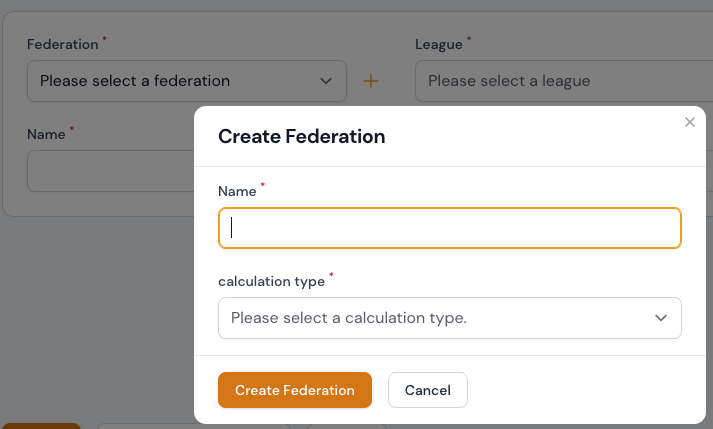

Verbände
Verbände stehen an der Spitze der Hirachie und sind ein Zusammenschluss von mehreren Ligen.
Derzeit können die folgenden Attribute über das Formular angezeigt oder bearbeitet werden.
Attributtabelle
| Feld | Typ | Beschreibung | Erforderlich |
|---|---|---|---|
| Name | Text input | Der Name des Verbands | ja |
| Slug | Text input (readonly) | Der Slug wird automatisch aus dem Namen generiert | ja /automatisch |
| Kalkulationstyp | Select Box | Die Berechnungsart, nach der die Spiele berechnet werden | ja |
| Upload | File upload | Hier können Sie ein Bild zum Verband hochladen | nein |
Verband erstellen
Saisons & Turniere | Verbände

Ein Verband kann im Bereich Saisons & Turniere | Verbände über den Button Erstellen angelegt werden. Durch Bestätigen des Buttons Erstellen gelangen Sie zur Formulareingabe und können nach erfolgreichem Ausfüllen des Formulars durch Anklicken des Buttons Erstellen oder Erstellen & weiterer Eintrag den Verband anlegen.
Info
Die Formular-Eingabemöglichkeiten können Sie der o. g. Attributtabelle entnehmen.
Erstellen oder Erstellen & weiterer Eintrag
Ein Klick auf die Schaltfläche Erstellen führt Sie nach der Erstellung direkt zur Bearbeitungsseite des Datensatzes.
Ein Klick auf Erstellen & weiterer Eintrag bringt Sie zurück zum Formular Verband erstellen, wo Sie einen weiteren Datensatz eingeben können.

Saisons & Turniere | Teams
Ein Verband kann im Abschnitt Saisons & Turniere | Teams im Formular zum Erstellen oder Bearbeiten von Teams hinzugefügt werden. Rechts neben dem Auswahlfeld für die Auswahl eines Verbandes befindet sich ein Plus-Symbol. Dieses Symbol kann auch verwendet werden, um einen Verband zu erstellen.

Verband editieren

Sie können die Bearbeitungsseite eines Verbandes über die Auflistungstabelle im Bereich Saisons & Turniere | Verbände aufrufen. Hier können Sie den gewünschten Datensatz zur Bearbeitung auswählen und auf das Bearbeitungssymbol klicken. Wenn Sie auf das Bearbeitungssymbol klicken, gelangen Sie zum Bearbeitungsformular.
Info
Die Formular-Eingabemöglichkeiten können Sie der o. g. Attributtabelle entnehmen.
Verband betrachten
Sie können die Ansichtsseite eines Verbandes über die Auflistungstabelle im Bereich Saisons & Turniere | Verbände aufrufen. Hier können Sie den gewünschten Datensatz zur Ansicht auswählen und auf das Ansichtssymbol klicken. Wenn Sie auf das Ansichtssymbol klicken, wird der Datensatz in einem Dialogfenster angezeigt.

Verband löschen
Sie können einzelne Datensätze, eine Gruppe von Datensätzen oder alle Datensätze löschen.
Über die Auflistungstabelle
Standardmäßig können Sie Zuordnungen in der Auflistungstabelle als Ganzes löschen. Sie können aber auch einzelne Datensätze aus Ihrer Auflistungstabelle löschen, indem Sie auf das Mülleimersymbol klicken.


Über das Bearbeitungsformular ausgehend von der Auflistungstabelle
Sie können die Bearbeitungsseite eines Verbandes über die Auflistungstabelle im Bereich Saisons & Turniere | Verbände aufrufen. Hier haben Sie die Möglichkeit, den Datensatz zu entfernen, indem Sie die Schaltfläche Löschen bestätigen.
Danger
Jeder Löschvorgang wird erst nach erfolgreicher Bestätigung der zuvor angezeigten Sicherheitsabfrage durchgeführt. Wird die Sicherheitsabfrage abgebrochen, wird auch der Löschvorgang nicht ausgeführt.